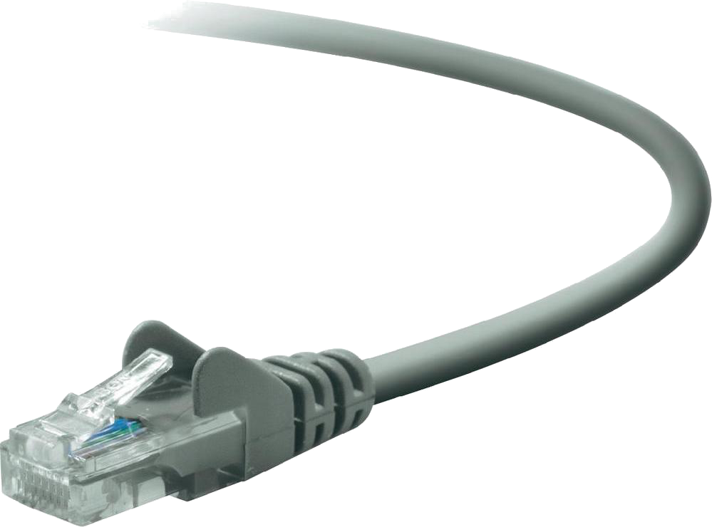
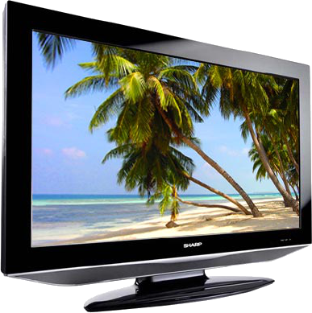
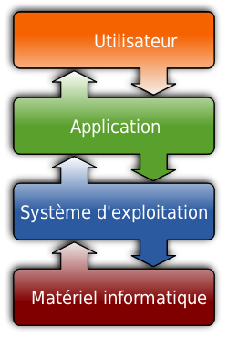

Le monde numérique
-
L'informatique,
les nouvelles technologies
et Internet
Qu'est-ce qu'Internet ?
C'est un réseau informatique mondial constitué d'un ensemble de réseaux d'ordinateurs nationaux, régionaux et privés.
Comment accéder à Internet ?
- Les objets connectés :
- et la connexion : 

L'ADSL, le câble, la fibre, le wifi, les réseaux mobiles (3G, 4G ...)
Les différentes couches informatiques


Quelles applications connaissez-vous ?
- Les navigateurs pour l'accés aux services web et Internet
- Messagerie électronique, Discussions en ligne, Communication en ligne (téléphone ou vidéo)
- Les outils bureautiques
- Les jeux
- ...

Quels sont les métiers du monde numérique ?
- Les applications, pages web: Ingénieurs logiciel, développeur, designer, chef de produit, chef de projet
- L'infrastructure: Ingénieurs systèmes, réseaux, bases de donnée, architecte, chef de projet